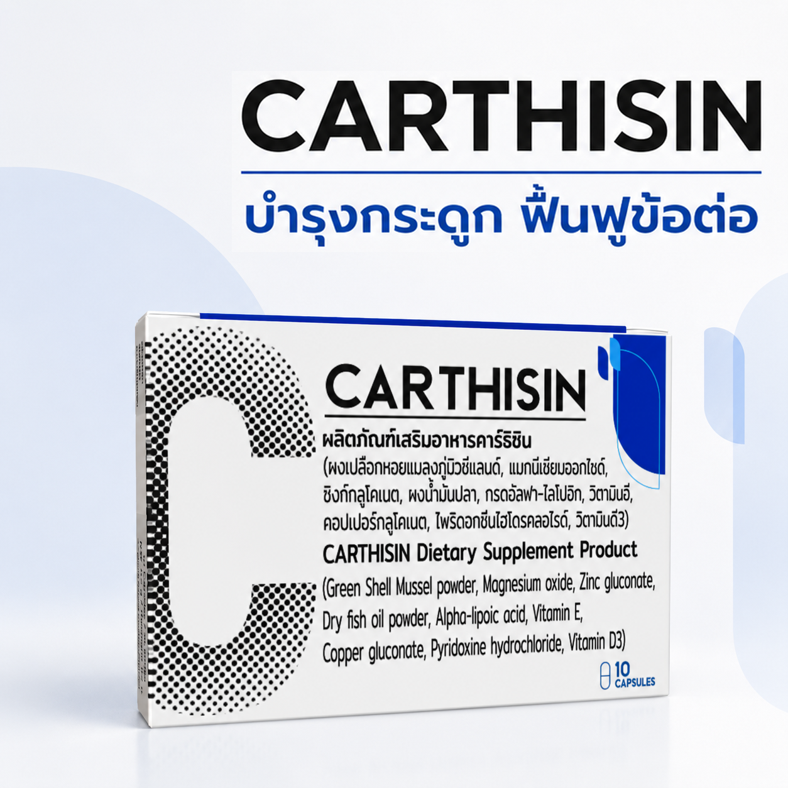
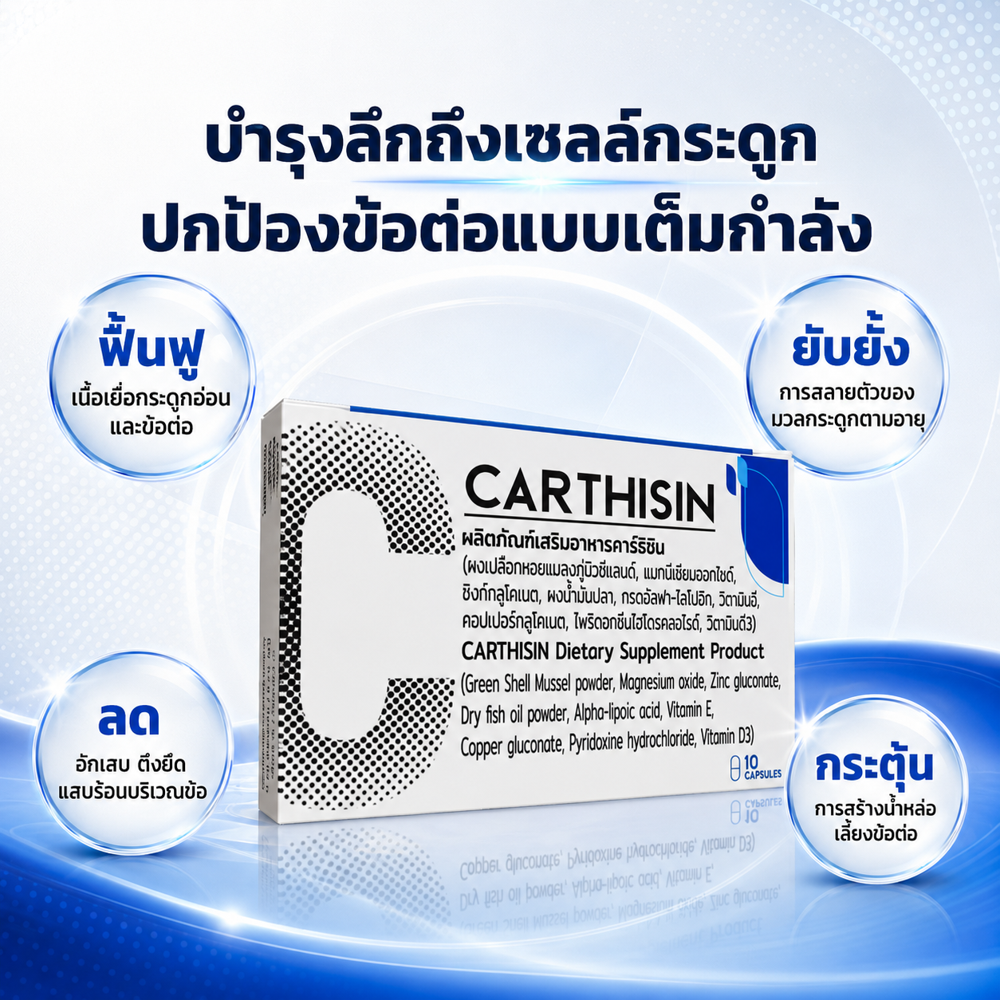
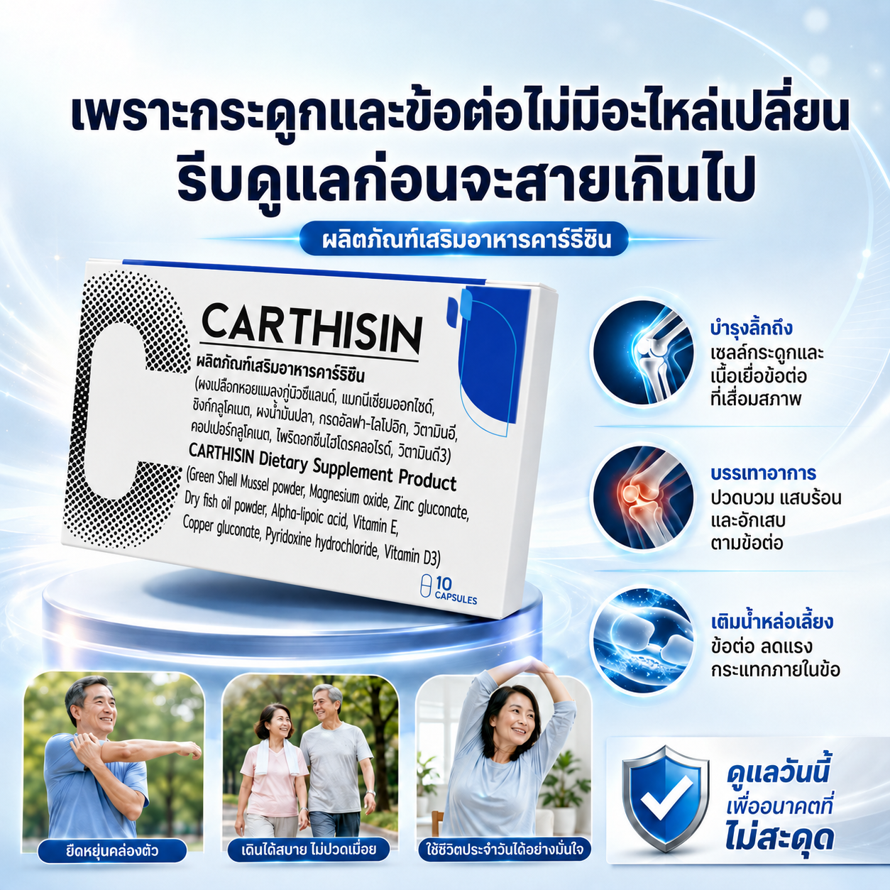
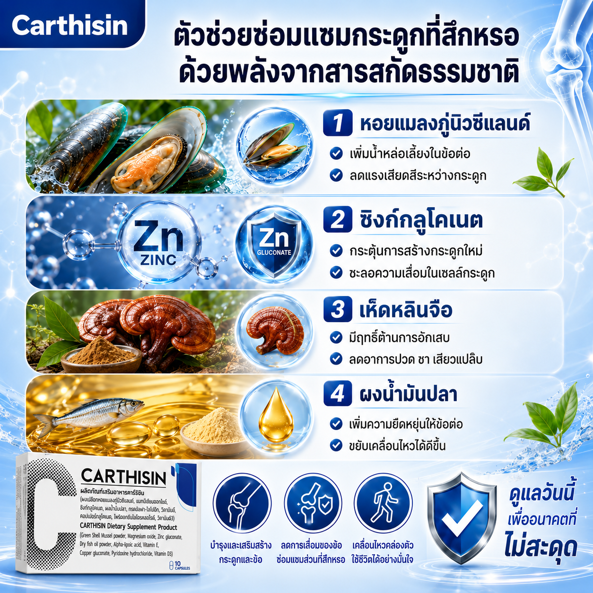
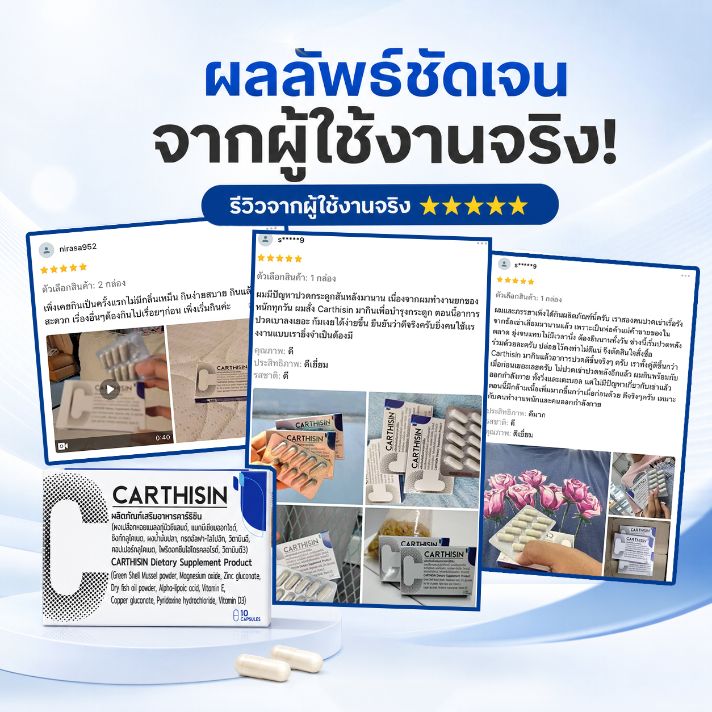
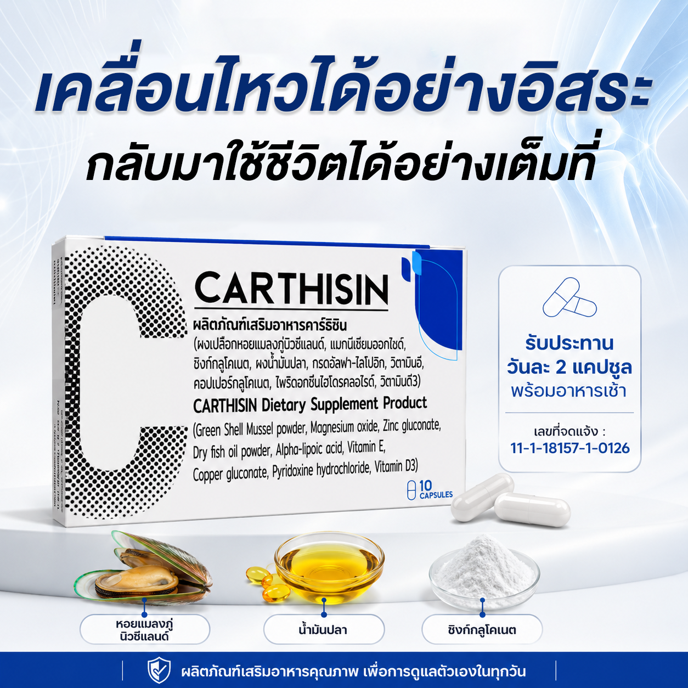
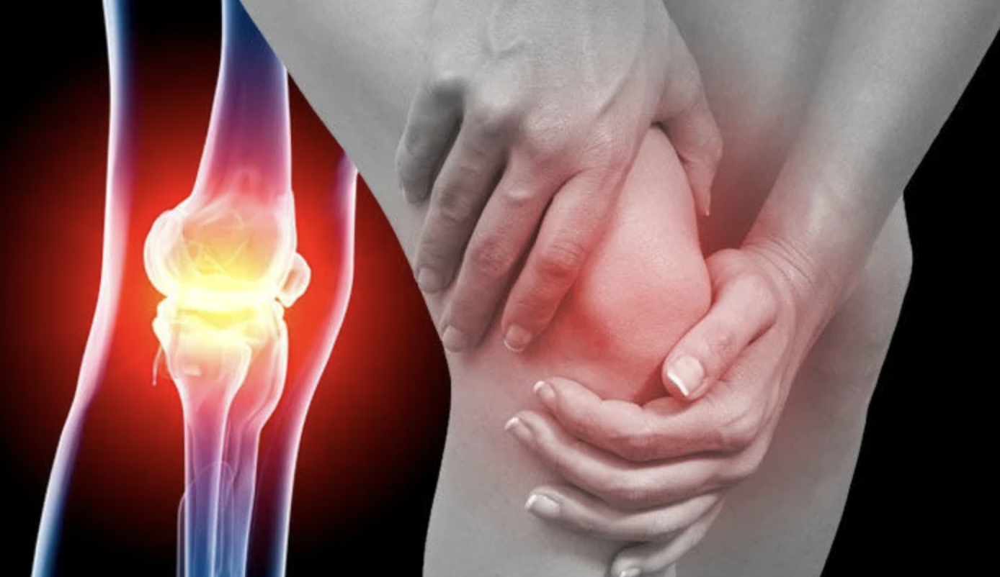

Extera
✓
ชะล้างสิ่งสกปรกตกค้างในลำไส้
✓
ปรับปรุงสุขภาพระบบทางเดินอาหาร
✓
เสริมสร้างระบบภูมิคุ้มกัน
เอ็กซ์ทีร่า จะเข้าไปทำความสะอาดสารพิษตกค้างและพยาธิปรสิตที่แฝงตัวตามผนังลำไส้อย่างอ่อนโยน กระตุ้นการเจริญเติบโตของจุลินทรีย์ชนิดดีในลำไส้ เพื่อฟื้นฟูระบบย่อยอาหารให้กลับมาทำงานได้อย่างเต็มประสิทธิภาพ มีส่วนสำคัญในการเสริมระบบภูมิคุ้มกัน ต้านเชื้อไวรัส และสิ่งแปลกปลอมในร่างกาย จึงช่วยลดโอกาสการเกิดหูดติ่งเนื้อบนผิวหนังอย่างตรงจุด คืนสุขอนามัยที่สะอาดและแข็งแรงจากภายในสู่ภายนอกอย่างยั่งยืน
🛡️ ผ่านการรับรองจาก อย.
เลขที่: 11-1-06353-5-0028
เช็กด่วน! พฤติกรรมสะสมสารพิษตกค้างและทำลายลำไส้ที่คุณอาจไม่รู้ตัว
ลองสำรวจพฤติกรรมการใช้ชีวิตและอาการผิดปกติทางร่างกายของคุณว่า… กำลังเผชิญกับภาวะลำไส้สะสมสารพิษและพยาธิในระบบทางเดินอาหารอยู่หรือไม่?
- ⚠️ พฤติกรรมการบริโภคอาหาร: ชื่นชอบการรับประทานของหมักดอง อาหารสุก ๆ ดิบ ๆ หรืออาหารที่ไม่ผ่านความร้อนอย่างทั่วถึง รวมไปถึงผู้ที่ใช้ชีวิตเร่งรีบ ทานอาหารไม่เป็นเวลา และดื่มแอลกอฮอล์เป็นประจำ
- ⚠️ พฤติกรรมการขับถ่าย: มีอาการท้องผูกเรื้อรัง ระบบขับถ่ายทำงานไม่เป็นปกติ ท้องอืด ท้องเฟ้อ มีลมในกระเพาะอาหารสูง หรือมีภาวะลำไส้อักเสบระคายเคือง
- ⚠️ พฤติกรรมการใช้ชีวิตสุดเหวี่ยง: รู้สึกพะอืดพะอม แน่นท้อง ไม่สบายตัวหลังจากทานอาหาร หรือเริ่มสังเกตเห็นความผิดปกติบนผิวหนัง เช่น หูดและติ่งเนื้อขึ้นตามร่างกาย ซึ่งเกิดจากระบบภูมิคุ้มกันภายในเริ่มอ่อนแอลง

วิกฤตลำไส้สกปรก: เมื่อสิ่งหมักหมมและพยาธิปรสิต
ทำลายระบบภูมิคุ้มกันจนแสดงออกเป็นหูดติ่งเนื้อ
เมื่อผนังลำไส้ถูกปกคลุมด้วยสารพิษตกค้าง สิ่งสกปรก และพยาธิปรสิต ร่างกายจะไม่สามารถดูดซึมสารอาหารที่ดีไปใช้งานได้ ส่งผลกระทบอย่างรุนแรงต่อระบบสุขภาวะภายใน
ลำไส้ ซึ่งเป็นศูนย์รวมเซลล์ภูมิคุ้มกันกว่า 70% ของร่างกายถูกทำลาย ระบบต้านทานการติดเชื้อจะดิ่งลงอย่างรวดเร็ว ร่างกายไม่สามารถจำกัดไวรัสหรือเซลล์ที่เติบโตผิดปกติได้ ส่งผลให้แสดงออกทางผิวหนังในลักษณะของหูด เนื้องอกผิวหนัง หรือติ่งเนื้อที่กระจายทั่วร่างกาย ควบคู่ไปกับอาการอ่อนเพลียเรื้อรัง ระบบขับถ่ายแปรปรวน และการสะสมตัวของสารพิษที่เป็นอันตรายในระยะยาว
ผลลัพธ์เชิงบวกเมื่อลำไส้สะอาดและระบบภูมิคุ้มกันฟื้นตัว
ด้วยทางเลือกใหม่จาก Extera
✨ ขับถ่ายง่าย สบายท้อง ไม่ปวดบิด: ช่วยปรับระบบขับถ่ายให้ทำงานง่ายและสม่ำเสมอในทุกเช้า ลดปัญหาท้องผูกเรื้อรัง มวนท้อง และหมดกังวลเรื่องอาการท้องอืด ท้องเฟ้อ หรือมีลมแน่นพุง
✨ ล้างสารพิษและขับสิ่งสกปรกตกค้าง: ร่างกายสามารถชะล้างสิ่งสกปรก สารเคมีจากอาหาร และพยาธิปรสิตสะสมออกไปได้อย่างมีประสิทธิภาพ ส่งผลให้ร่างกายโดยรวมรู้สึกดีขึ้น
✨ ยกระดับภูมิคุ้มกัน ผิวพรรณเรียบเนียน: เมื่อระบบต้านทานไวรัสภายในแข็งแรงขึ้น ร่างกายจะสามารถจัดการกับเซลล์ผิวหนังที่เติบโตผิดปกติได้ดี ส่งผลให้หูดและติ่งเนื้อตามผิวหนังค่อย ๆ แห้ง ฝ่อตัว และจางลงอย่างเห็นได้ชัด
✨ ปรับสมดุลระบบลำไส้ในระยะยาว: เพิ่มจำนวนจุลินทรีย์ชนิดดีในทางเดินอาหาร ช่วยให้ระบบย่อยทำงานได้เต็มประสิทธิภาพ ดูดซึมสารอาหารได้ดีขึ้น และช่วยลดความเสี่ยงภาวะลำไส้แปรปรวนได้ในอนาคต
เจาะสูตรลับสารสกัดธรรมชาติ 6 ชนิดของ Extera
กลไกทำความสะอาดระบบทางเดินอาหารและต้านไวรัส

ขมิ้น
- บรรเทาอาการลำไส้อักเสบ
- ขับลมในกระเพาะ ลดอาการท้องอืดท้องเฟ้อ
- มีสารต้านอนุมูลอิสระประสิทธิภาพสูง
เกรฟฟรุต
- ขจัดสารพิษและพยาธิปรสิต
- กระตุ้นเอนไซม์ล้างพิษในลำไส้
- ปรับการขับถ่ายอย่างอ่อนโยน
ขิง
- ขับสารพิษตกค้างออกจากระบบย่อยอาหาร
- ลดอาการจุกเสียด แน่นท้อง
- กระตุ้นการบีบตัวของลำไส้ให้ขับถ่ายง่าย
กระเทียม
- เสริมระบบภูมิคุ้มกันให้แข็งแรง
- ต้านทานไวรัสที่เป็นสาเหตุของหูดติ่งเนื้อ
- ทำความสะอาดระบบทางเดินอาหาร
เสจ
- ปรับสมดุลจุลินทรีย์ชนิดดีในลำไส้
- ยับยั้งการเจริญเติบโตของเชื้อแบคทีเรียชนิดไม่ดี
- บรรเทาอาการพะอืดพะอม แน่นท้อง
พริกไทยดำ
- ป้องกันอาการท้องผูกและสิ่งตกค้างหมักหมม
- ส่งเสริมการดูดซึมสารอาหารเข้าสู่เซลล์
- เร่งกระบวนการเผาผลาญและย่อยอาหาร